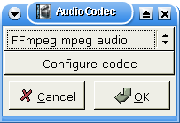
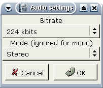

|
Pøevod AVI na MPEG 1.Pøíprava Tato stránka slou¾í jako pøíklad pøevodu AVI na VCD. Nastavení kódování k vytvoøení SVCD nebo DVD si budete schopni odvodit. U DVD je to trochu jinak, proto¾e Avidemux je schopen pøímo zapsat øádné MPEG PS soubory (audio+video), viz DVDJakýkoli AVI soubor s vhodnými kodeky mù¾e být zakódován na VCD. Napøíklad DivX+MP3 (k práci s MP3 zvukem musíte mít MAD). VCD export sestává ze tøí krokù: komprese obrazu, komprese zvuku a multiplexace. Napøed upravíme velikost tak, aby vyhovovala specifikaci Video CD. To znamená 352*240 pro NTSC nebo 352*288 pro PAL. Po naètení zdrojového AVI souboru si otevøete okno s video filtry pomocí F1.
Kliknìte na tlaèítko VCD res na pravé stranì. To automaticky zmìní velikost obrazu a pøidá èerné okraje k dosa¾ení správné velikosti bez zmìny pomìru stran. Teï otevøete dialog pro výbìr kodeku tlaèítkem V Codec. Zvolte VCD. Tam se nic nekonfiguruje. Nakonec File->Save Video a zvolte soubor pro ulo¾ení video streamu. Napøíklad /tmp/videocd.m1v. Teï si mù¾ete pøeèíst dal¹í èásti dokumentace Avidemuxu, a za pár hodin pokraèovat.
Zvuk je s nejvìt¹í pravdìpodobností zakódován ve formátu, který není kompatibilní s VCD. Tak¾e jej pøekódujeme. Nastavte audio re¾im Process - F6, a vyberte audio kodek - F4.  Zvolte FFmpeg MPEG audio a stisknìte tlaèítko Configure codec. Musíte nastavit Stereo a 224 kbps.  Nyní pøidáme nìjaké audio filtry, které mohou být potøeba, stisknìte F2. Jsou tøi mo¾nosti:
Ulo¾te pomocí Audio->Save Audio, napøíklad do /tmp/videocd.mp2. Znovu si projdìte dokumentaci, podívejte se na film, pøeètìte si kní¾ku, a za hodinu se vra»te zpìt. 2.Po Avidemuxu Teï máte pøipraven samostatný audio a video stream. Slouèíte je programem mplex: mplex -S XXX -f 1 -o /tmp/videocd.mpg videocd.m1v videocd.mp2 Hodnotu XXX nahraïte velikostí svého CD: 790 pro 80 minutové CD. Po dokonèení budete mít hotový validní videocd.mpg soubor. Èas k vytvoøení VCD. Jednoduché VCD bez kapitol, menu atd. udìláte takto: vcdimager -t vcd20 videocd.mpg To vytvoøí soubory videocd.cue a videocd.bin, vypálíte programem cdrdao. 3.Není nad bash Stejné opreace mù¾ete provést z pøíkazového øádku: avidemux --load vstup.avi --vcd-res --video-process --video-codec VCD --save /tmp/videocd.m1v --audio-process --audio-normalize --audio-downample --audio-codec MP2 --audio-bitrate 224 --save-uncompressed-audio /tmp/videocd.mp2 --quit Takto mù¾ete udìlat plnì automatický AVI->VCD skript. |